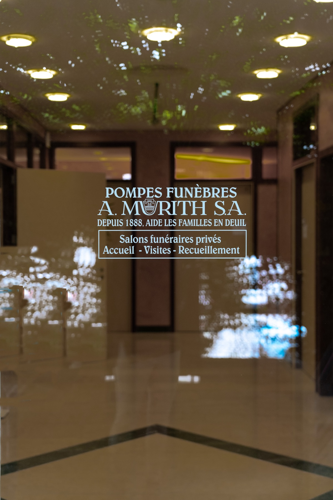
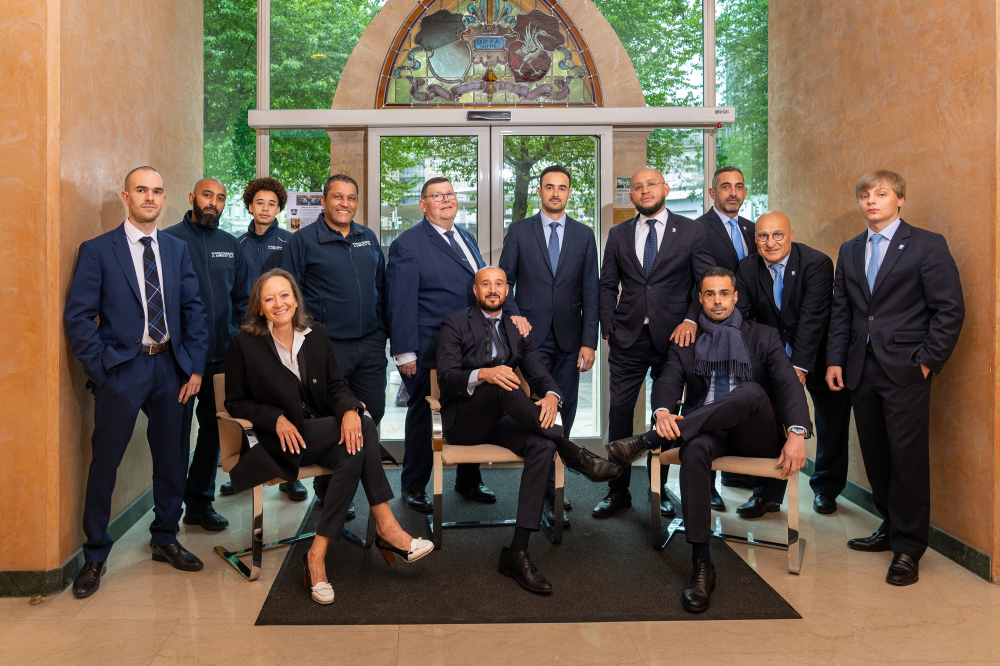

Photo
Jacques
Courte présentation du conseiller : parcours, façon d'accompagner les familles.
- Langues parlées
- LangueLangue
- Spécialité
- Spécialité

Votre messagerie s'ouvre pour envoyer votre message.
Notre équipe
Nos conseillers funéraires sont à votre disposition pour vous aider à faire le meilleur choix.

Les démarches administratives à Genève requièrent la déclaration de décès, l'obtention d'un acte de décès et de contacter les institutions financières pour bloquer et débloquer les comptes du défunt. Notre service de pompes funèbres s'occupe de toute la prise en charge liée au défunt et les démarches administratives.
L'organisation des obsèques dans le Canton de Genève implique la préparation du corps, la planification de la cérémonie et le choix entre inhumation et crémation.
C'est un document prouvant le décès et qui donne des indications sur la personne décédée et précise où et quand le décès a eu lieu. Le service de pompes funèbres Murith se charge de l'obtention de ce document.
La préparation du corps est une étape cruciale de l'organisation des obsèques. Les pompes funèbres Murith, basées à Genève, proposent des services spécialisés pour la préparation du corps du défunt, ce qui inclut la toilette mortuaire, l'habillage et la mise en bière.
La thanatopraxie, qui est une forme de conservation du corps, est une pratique optionnelle disponible à la demande des familles. Ces soins apportés au corps jouent un rôle essentiel pour les familles souhaitant prolonger la période de recueillement avant l'enterrement ou la crémation.
L'entreprise de pompes funèbres Murith propose divers services tels que l'organisation des obsèques, le transport et la conservation du corps ainsi que de tous les produits reliés aux funéraires - cercueils, arrangement de fleurs, ainsi que la préparation de l'avis décès et de faire-part de décès.
Organiser des obsèques à Genève peut être une tâche complexe, avec de nombreux aspects à prendre en compte. Cependant, avec une planification adéquate et l'aide de professionnels compétents, il est possible de rendre ce processus moins stressant et plus gérable. Les pompes funèbres Murith ont plus de 135 ans d'expérience dans l'accompagnement des familles en deuil.
Itinéraire
Nous sommes situés au centre ville de Genève en face de l'hôpital cantonal de Genève (HUG).
Notre équipe vous guide immédiatement dans les premières démarches, sans engagement.
Quelques minutes suffisent. Aucune donnée personnelle n'est demandée à cette étape.